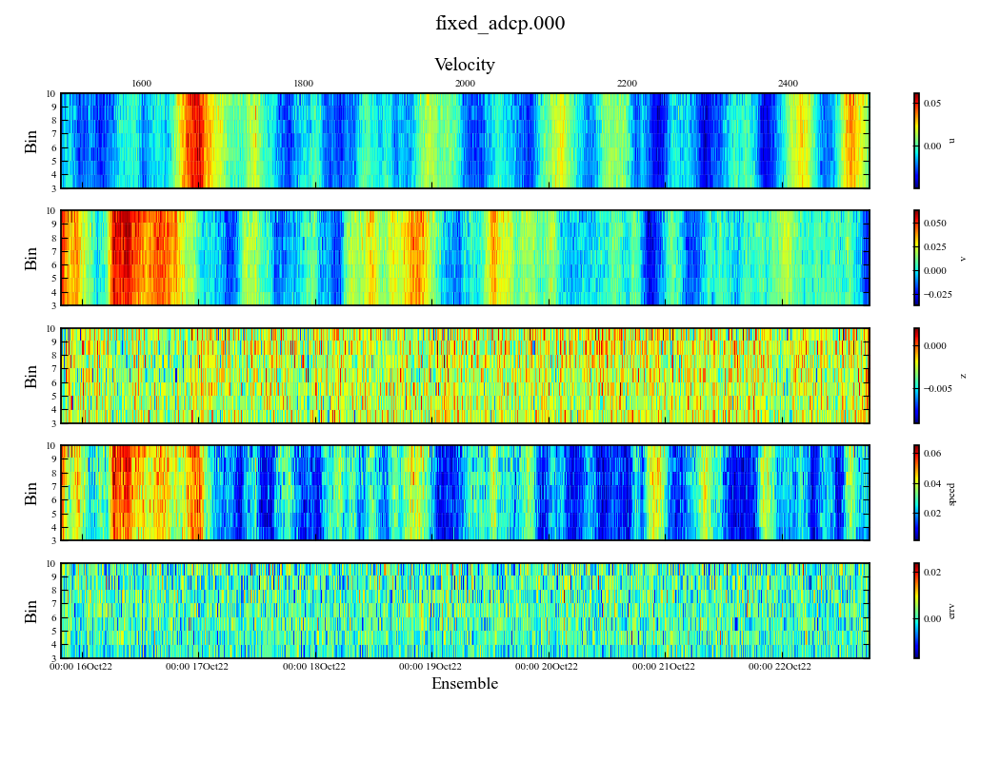
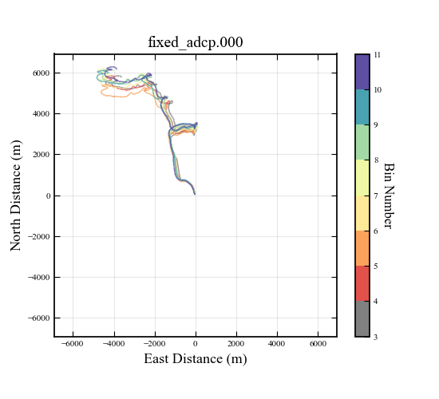

Pd0 Dataset
Base class for working with binary Pd0(.000) files generated by TRDI ADCPs.
Overview
Read in ensemble data from raw binary format (.000, .000r) into structured dictionary
Retrieve ensemble data as NumPy arrays
Calculate exact beam positions using internal or external (e.g., platform) orientation data
Calculate absolute backscatter
Transform beam data to real-world coordinate systems using platform position data
Mask data based on measured and derived quality control parameters
Apply timezone and magneteic deviation corrections to ensemble data
Visualize raw and derived ADCP data.
Limitations
Velocity must be recorded in earth coordinates (beam coordinate transformations not implemented yet
Limited functionality outside of 4-beam TRDI Workhorse instruments
Loading Data
Pd0 files are produced by TRDI ADCPs and contain raw data recorded by the instrument.
All data described in Section 5 of RDI ADCP Workhorse Commands and Output Data Format are parsed into a list of structured dictionaries
Initalize a DataSet object to read a pd0 file. The list of raw ensemble dictionaries can be accessed by the ensemble_data attribute
"""Load an example pd0 file .
"""
import pyplume as pp
fpath_pd0 = r'.\example_data\fixed_adcp\fixed_adcp.000' # path to file
adcp = pp.pd0.DataSet(fpath_pd0) # create a dataset
ens_data = adcp.ensemble_data
"""Load select ensemble range from example pd0 file.
"""
import pyplume as pp
fpath_pd0 = r'.\example_data\fixed_adcp\fixed_adcp.000' # path to file
adcp = pp.pd0.DataSet(fpath_pd0, start = 500, end = 1500) # create a dataset
ens_data = adcp.ensemble_data
Querying Ensemble Data
- ADCPs record timeseries depth profiles for the following fields
Echo Intensity
Correlation Magnitude
Percent Good
Velocity (u,v,and z)
Error Velocity
—
- Echo Intensity:
The echo intensity scale factor is about 0.45 dB per WorkHorse ADCP count. The WorkHorse ADCP does not directly check for the validity of echo intensity data.
- Correlation Magnitude:
The magnitude of the normalized echo autocorrelation at the lag used for estimating the Doppler phase change. The WorkHorse ADCP represents this magnitude by a linear scale between 0 and 255, where 255 is perfect correlation (i.e., a solid target). A value of zero indicates bad correlation values. High correlation magnitude values suggest that the acoustic signal is being reflected effectively by particles in the water, leading to reliable velocity and echo measurements
- Percent Good:
Quantitatively expresses the proportion of data within each ensemble (a set of rapid sequential measurements) that meets predefined quality criteria based on the ADCP’s internal diagnostics. Basically a data-quality indicator that reports the percentage (0 to 100) of good data collected for each depth cell of the velocity profile. - pg1: percentage of successful velocity calculations using 3-beam solutions - pg2: percent of error velocity (5%) that was higher than the WE command setting - pg3: more than one beam bad in bin - pg4: percentage of successful velocity calculations using 4-beam solutions
- Velocity:
TRDI ADCPs typically employ a four-beam configuration, with beams angled off the vertical axis. Each beam measures the velocity component along its direction derived from measured Doppler shift for emitted energy from particles suspended in teh water column. Through trigonometric transformations, these individual beam velocities are combined to compute the three primary components of velocity: longitudinal (u), transverse (v), and vertical (z) relative to a coordinate system. The instrument is assumed to be stationary. For moving platforms, platformvelocity must be subtracted.
- Error Velocity:
The error component of the 4-beam solution for velocity - derived from the perpendicular component of the velocity vector that cannot be accounted for by the primary flow directions. If the beams were perfectly aligned and there were no measurement errors or external disturbances, the error velocity would ideally be zero. Error velocity serves as a critical diagnostic metric to assess the quality of data obtained from an ADCP. High error velocity values suggest issues such as: - Signal scattering by particulates or biological entities not aligned with the flow. - Acoustic noise or interference. - Instrument misalignment or malfunction. - Complex flow structures that do not conform neatly to straightforward vector decomposition.
There are several ways to access ensemble data as numpy arrays
Multi-beam timeseries profiles (e.g., Echo Intensity) can be accessed using the get_ensemble_array method.
Velocity timeseries profiles can be accessed using the get_velocity method.
"""Query timeseries profile data
"""
help(adcp.get_ensemble_array)
echo = adcp.get_ensemble_array(field_name = 'ECHO INTENSITY')
cmag = adcp.get_ensemble_array(field_name = 'CORRELATION MAGNITUDE')
pg = adcp.get_ensemble_array(field_name = 'PERCENT GOOD')
help(adcp.get_velocity)
u,v,z,du,dv,dz,ev = adcp.get_velocity() # each has dims (n_bins, n_ensembles)
Querying Leader Data
- ADCPs record timeseries for numerous other environmental and instrument parameters, some of which are
ensemble datetimes
ensemble numbers
bottom track distance (if active)
sensor pitch, roll, and heading
sensor temperature, salinity, and depth (if external sensor attached)
Data from the Fixed and Variable leaders (generally sensor configuration data) can be accessed using the get_leader_data and several convenience shells for this method
"""Query timeseries data from fixed and variable leaders
"""
ensemble_data = adcp.ensemble_data # list of structered dict. containing data from each ensemble
# get timestamps and ensemble numbers
t = adcp.get_ensemble_datetimes() # ensemble times in datetime format
en = adcp.get_ensemble_numbers() # recorded ensemble numbers
# get internal orientation data
heading = adcp.get_sensor_heading() #sensor heading
pitch = adcp.get_sensor_pitch()
roll = adcp.get_sensor_roll()
# get internal sensor data
salinity = adcp.get_salinity()
temp = adcp.get_sensor_temperature()
# All of these are just shells for the more basic get_leader_data method, which can be used to retrieve timeseries data from any leader/field combination in adcp.ensemble_data
# query timeseries for arbitrary leader data
print('Fixed Leader Keys')
print(adcp.ensemble_data[0]['FIXED LEADER'].keys())
power = adcp.get_leader_data(field = 'SYSTEM POWER {CQ}', leader = 'FIXED LEADER')
print('Variable Leader Keys')
print(adcp.ensemble_data[0]['VARIABLE LEADER'].keys())
vsound = adcp.get_leader_data(field = 'SPEED OF SOUND {EC}', leader = 'VARIABLE LEADER')
# query beam 1 bottom track velocity data (may throw error if bottom track is not enabled)
beam1_bt_vel = adcp.get_leader_data(leader = 'BOTTOM TRACK', field = 'BEAM#1 BT VEL')
Applying Timezone and Magnetic Deviation Correction
Magnetic deviation and timezone corrections are applied when the data are queried using get_ensemble_datetimes() and get_velovity(). Corrections are also applied on all plots.
"""apply magnetic deviation and timezone correction
"""
adcp.magnetic_deviation_correction = 8 # rotate the velocity vectors 8 degrees counterclockwise when queried
adcp.timezone_correction = -2 # subtract two hours from raw ensemble datetimes
Calculating Absolute Backscatter
A modified version of the SONAR equation presented in FSA-031 Backscatter Estimation Using Broadband Acoustic Doppler Current Profilers is used to onvert ADCP backscatter data (Echo Intensity) from counts (a raw measurement) to dB (decibel), a logarithmic measure of absolute backscatter strength.
While not strictly necessary, an instrument specific P3 file (result file from TRDI recieve path test) should be used to supply instrument RSSI (k_c) parameters when calculating absolute backscatter.
In absence of P3 result file, This calculation be done quickly using default parameters.
"""calculate absolute backscatter with default parameters
"""
adcp.processing.calculate_absolute_backscatter()
RSSI parameters for each beam can also be specified in the code and supplied as an optional argument
"""calculate absolute backscatter with default parameters
"""
k_c = {1:0.4,
2: 0.38,
3: 0.41,
4: 0.39}
adcp.processing.calculate_absolute_backscatter(k_c = k_c)
adcp.plot.four_beam_flood_plot(field_name = 'ABSOLUTE BACKSCATTER')
Alternatively, a P3 result file can be incorporated at DataSet initalization
"""calculate absolute backscatter with default parameters
"""
fpath_pd0 = r'.\example_data\mobile_adcp\mobile_adcp.000'
fpath_p3 = r'.\example_data\mobile_adcp\P3.txt'
adcp = pp.pd0.DataSet(fpath_pd0, pt3_filepath = fpath_p3, start = 1500, end = 3500)
adcp.processing.calculate_absolute_backscatter()
adcp.plot.four_beam_flood_plot(field_name = 'ABSOLUTE BACKSCATTER') # plot
Incorporating Position Data
Position data loaded into a Pose object can be used by DasaSet objects to transform measurements into real-world coodinate systems.
The pose attribute of a DataSet object can be set using the geometry.set_pose method (LINK TO POSE PAGE)
If the heading, pitch, and roll of the pose position data are suspect or missing , setting update_orientation = True will update these fields with adcp sensor data
"""create a pose object and set adcp pose attribute
"""
# create a pose object for the ROV (timeseries of position + orientation)
df = pd.read_csv(r'.\example_data\mobile_adcp\position.csv', parse_dates = True, index_col = [0])
pose = pp.pose.Pose(df = df, name = 'ROV', proj = 'EPSG:32611', z_convention = 'normal')
# update DataSet pose attribute
adcp.geometry.set_pose(pose,update_orientation = False)
# plot trajectory
fig,ax = adcp.geometry.pose.plot.trajectory()
Transformation to Real-World Coordinates
ADCPs typically record data along the length of four or more beams, which are offset by a fixed angle (typically 20 degrees). Transforming measurements into real world coordinated requires - Determining the position of each depth cell in each beam relative to the instrument position measurement (accounting for beam angle, depth cell length, blank distance), and - Rotating the position of all beams about the pitch, roll, and heading (yaw) instrument axes based measured orientation
For fixed ADCPs, it’s assumed that the position and orientation of the instrument are constant and individual beams measure the same region of space (profiles) throughout the measurement period. For mobile ADCPS, it’s assumed that the position and orientation of the instrument are time-varying and individual beams measure different regions of space (transects) throughout the measurement period.
For DataSets configured with a Pose object, the geometry.calculate_beam_geometry method handles these transformations: - calculates the beam midpoint positions relative to the transducer face for every ensemble (accounting for sensor orientation and platform orientation) - calculate the true bottom track distance (accounting for orientation). - calculate the absolute position of each bin/ensemble in the Pose coordinate system. A vesrion of the beam position dataset is calcualted relative to the ADCP bottom track if activated (for vertical datum only)
"""create a pose object and set adcp pose attribute
"""
adcp.geometry.set_pose(pose,update_orientation = False)
adcp_offset = (0.5,0.5,-0.75) # (x,y,z) offset distances between the adcp and position measurement.
adcp_rotation = 45 # degrees clockwise the ADCP is rotated in the housing. Typically the instrument will have a designated forward facing beam (e.g., beam 3 for some TRDI instruments)
dr = 0.1 # distance between transducer face and center of instrument (along axis of beam direction).
adcp.geometry.calculate_beam_geometry(rotation=adcp_rotation, offset = adcp_offset, dr=0.1) # calculate beam geometry attributes
X = adcp.geometry.get_absolute_beam_midpoint_positions() # retrieve beam midpoint position timeseries in Pose coordinate system
X_HAB = adcp.geometry.get_absolute_beam_midpoint_positions_HAB() # retrieve beam midpoint positions with z-value as HAB (determined from bottom-track)
Plotting
Beam Data
Beam data include any field where ensemble data are stored for individual beams. These include - echo intensity - correlation magnitude - percent good - absolute backscatter (if calculated) - suspended sediment concentration (if calculated)
Flooded color plots show scalar fields of ensemble data for each beam. Echo Intensity, Correlation Magnitude and Percent Good are raw outputs from the ADCP. Derived fields added to the DataSet can be plotted as well (e.g., Absolute Backscatter). One each subplot time on the horizontal axis and distance from the transducer on the y-axis. With the exception of percent good, each subplot represents data from one beam. For percent good, pg1 - pg4 are shown, which are general indicators of signal quality.
"""Four-beam flooded color plots for beam ensemble fields
"""
fig,ax = adcp.plot.four_beam_flood_plot(field_name = 'ECHO INTENSITY')
fig,ax = adcp.plot.four_beam_flood_plot(field_name = 'CORRELATION MAGNITUDE')
fig,ax = adcp.plot.four_beam_flood_plot(field_name = 'PERCENT GOOD')
fig,ax = adcp.plot.four_beam_flood_plot(field_name = 'ABSOLUTE BACKSCATTER',plot_by = 'bin')
fig,ax = adcp.plot.four_beam_flood_plot(field_name = 'ABSOLUTE BACKSCATTER', vmin = -100,vmax = -50, plot_by = 'depth')
fig,ax = adcp.plot.four_beam_flood_plot(field_name = 'ABSOLUTE BACKSCATTER', start_ensemble = 200, end_ensemble = 400, start_bin = 5, end_bin = 10)

Four beam mesh plots are similar to flood plots, but show the scalar field of ensemble data projected onto a 2-d mesh defined by the z-component of the transformed beam midpoint positions. (Only different from flood plot if Pose initalized in DataSet)
"""Four-beam mesh plots for echo ensemble fields
"""
fig,ax = adcp.plot.four_beam_mesh_plot(field_name = 'ABSOLUTE BACKSCATTER', plot_by = 'depth')
Velocity Data
Velocity data are recorded as u-velocity, v-velocity, z-velociy, and error velocity.
Velocity data can be plotted as
Flooded clolor profile plots
Progressive vector plots
More to come
"""plot velocity data
"""
fpath_pd0 = r'.\example_data\fixed_adcp\fixed_adcp.000' # path to file
adcp = pp.pd0.DataSet(fpath_pd0) # create a dataset
adcp.plot.velocity_flood_plot()
adcp.plot.velocity_flood_plot(start_bin = 3, end_bin = 10,start_ensemble = 1500, end_ensemble = 2500)
adcp.plot.progressive_vector_plot()
adcp.plot.progressive_vector_plot(start_bin = 3, end_bin = 10, start_ensemble = 1500, end_ensemble = 2500)
adcp.plot.progressive_vector_plot(start_bin = 3, end_bin = 10, start_ensemble = 1500, end_ensemble = 2500, color_by = 'velocity')
 
Masking
Masks for ensemble beam data can be created and stored then applied when querying and plotting data.
"""Create and aply some masks
"""
import pyplume as pp
# read in ADCP data
fpath_pd0 = r'.\example_data\mobile_adcp\mobile_adcp.000'
fpath_p3 = r'.\example_data\mobile_adcp\P3.txt'
adcp = pp.pd0.DataSet(fpath_pd0, pt3_filepath = fpath_p3, start = 1500, end = 3500)
# calculate absolute backscatter
adcp.processing.calculate_absolute_backscatter()
# masking
adcp.mask.set_mask_status(False) # turn off all masks
# mask by signal to noise ratio
fig,ax = adcp.plot.four_beam_flood_plot(field_name = 'SIGNAL TO NOISE RATIO')
sn = adcp.get_ensemble_array(field_name = 'SIGNAL TO NOISE RATIO', mask = False)
mask = sn>1 # accept signal to noise ratio greater than 5
adcp.mask.define_mask(mask, name = 'StN>1', set_active = True)
# mask by correlation magnitude
fig,ax = adcp.plot.four_beam_flood_plot(field_name = 'CORRELATION MAGNITUDE')
cmag = adcp.get_ensemble_array(field_name = 'CORRELATION MAGNITUDE', mask = False)
mask = cmag>75 # accept cmags greater than 75
adcp.mask.define_mask(mask, name = 'cmag>75', set_active = True)
# mask by absoulte backscatter
fig,ax = adcp.plot.four_beam_flood_plot(field_name = 'CORRELATION MAGNITUDE')
abs = adcp.get_ensemble_array(field_name = 'ABSOLUTE BACKSCATTER', mask = False)
mask = abs>-85 # accept absolute backscatter greater than -85
adcp.mask.define_mask(mask, name = 'cmag>75', set_active = True)
#mask first two bins
mask = np.full(cmag.shape,True)
mask[:,0:2,:] = False # set the first two bins as false
adcp.mask.define_mask(mask, name = 'first two bins', set_active = True)
# turn off masks and retrieve some raw data
adcp.mask.set_mask_status(False) # turn off all masks
ABS_raw = adcp.get_ensemble_array(field_name = 'ABSOLUTE BACKSCATTER',mask = True) # get
fig,ax = adcp.plot.four_beam_flood_plot(field_name = 'ABSOLUTE BACKSCATTER')
# turn on masks and retrieve some masked data
adcp.mask.set_mask_status(True)
ABS = adcp.get_ensemble_array(field_name = 'ABSOLUTE BACKSCATTER',mask = True) # get
# plots
fig,ax = adcp.plot.four_beam_flood_plot(field_name = 'ABSOLUTE BACKSCATTER', vmax = -70, vmin = -85)
fig,ax = adcp.plot.four_beam_mesh_plot(field_name = 'ABSOLUTE BACKSCATTER', vmax = -70, vmin = -85, plot_by = 'depth')
Bottom Track Data
Bottom Track is a feature of ADCPs that allows the device to measure its speed over the ground by focusing the echo sounding toward the bottom surface of the water body, usually the seabed. This method is particularly useful for navigation and for measuring flow velocities in environments where there are no fixed reference points in the water column.
Bottom track distances can be used to mask echo intensity data.
Bottom Track Velocities are recorded and accessible using the get_leader_data method - but no fance procesisng features are available… yet!
"""Create and apply some masks
"""
# load data
fpath_pd0 = r'.\example_data\mobile_adcp\mobile_adcp_plume_transect.000'
adcp = pp.pd0.DataSet(fpath_pd0)
# get raw bottom track data for one ensemble
bt_ens = adcp.ensemble_data[0]['BOTTOM TRACK']
# query beam 1 bottom track velocity data
beam1_bt_vel = adcp.get_leader_data(leader = 'BOTTOM TRACK', field = 'BEAM#1 BT VEL')
print('Bottom Track Fields')
print([i for i in bt_ens.keys()])
# plot raw data
adcp.plot.four_beam_flood_plot()# plot raw data
# mask bottom track
adcp.processing.mask_bottom_track(cell_offset = -1)
# plot in real-world coordinates - adjuseted for HAB
# create a pose object for the ROV (timeseries of position + orientation)
df = pd.read_csv(r'.\example_data\mobile_adcp\position.csv', parse_dates = True, index_col = [0])
pose = pp.pose.Pose(df = df, name = 'ROV', proj = 'EPSG:32611', z_convention = 'normal')
adcp.geometry.set_pose(pose)
adcp.geometry.calculate_beam_geometry()
adcp.plot.four_beam_mesh_plot(plot_by = 'HAB')